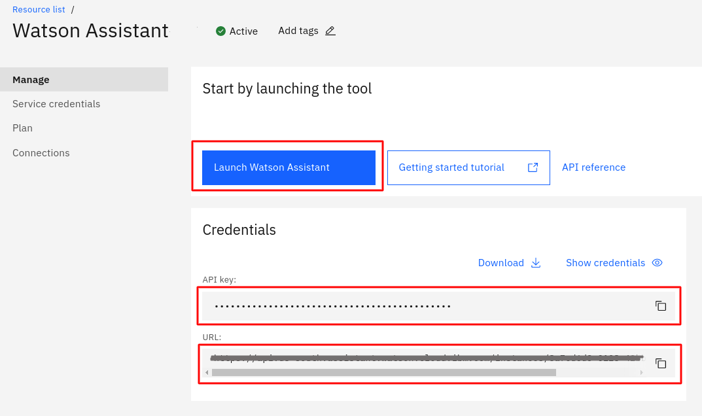
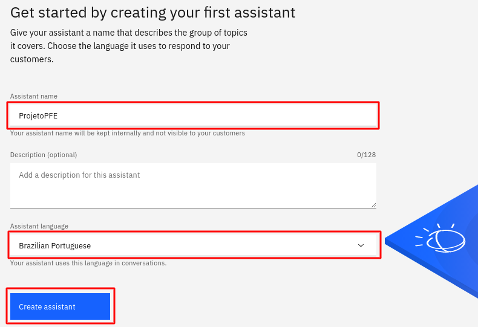
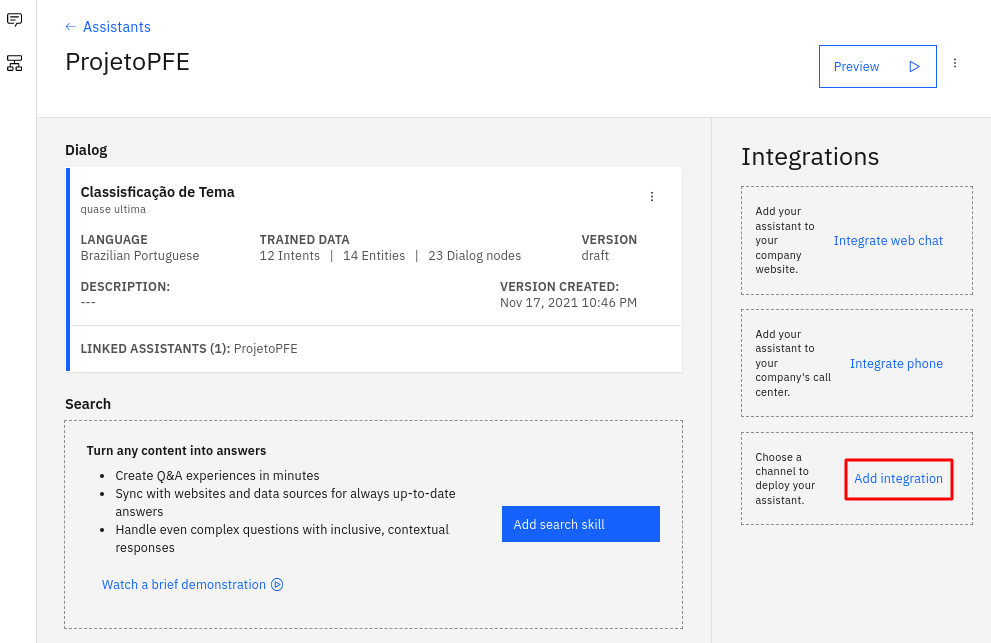
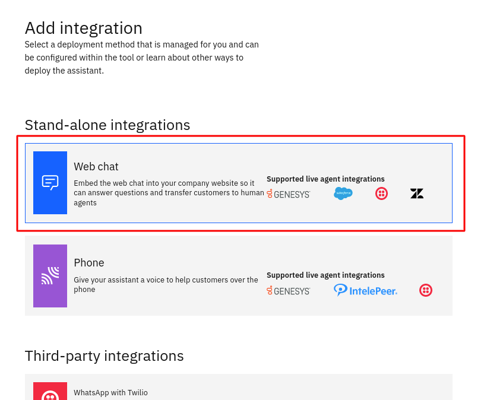
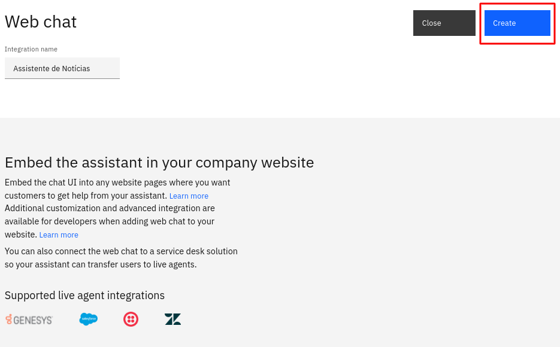
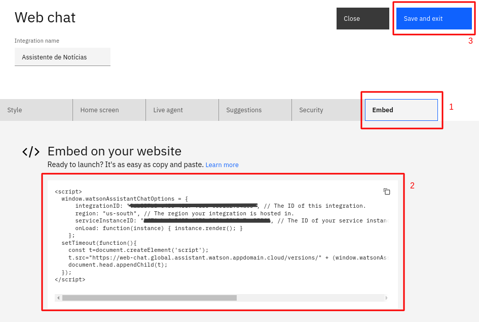

Watson Assistant
O que é o Watson Assistant?
Ferramenta de construção de chatbots que utiliza inteligência artificial para simular uma conversação humana com o usuário. A plataforma permite a criação de interfaces de conversação em diferentes dispositivos e aplicativos. Este toturial irá abordar construção de um chatbot transacional, ou seja, ele consulta informações dentro de uma base de dados para responder ao usuário.
Criando uma instância do Watson Assistant
- No Dashboard do IBM Cloud clique em
Create Resource - Selecione o Watson Assistant
- Selecione uma localidade (ou deixe a padrão)
- Selecione o plano de serviço Free
- Service name:
Watson Assistant - Aceite os termos de serviço
- Clique em
Create
- Clique em
Launch Watson Assistant
Note
Salve a API key e URL para uso posterior
- Assistant name:
ProjetoPFE - Assistant language:
Brazilian Portuguese - Clique em
Create assistant

- Vá na aba de Skills
- Clique em
Create Skill - Selecione
Add an actions or dialog skill

- Clique na aba
Upload skill - Adicione o arquivo skill-Assistant
- Clique em
Upload

Intents, entities e dialogs
Para a construção do chatbot, é necessário definir intents, entidades e dialogs. Essa estruturação para a formação dos diálogos pode ser configurada de duas maneiras:
- Manualmente pelo dashboard do Watson Assistant
- Por meio de um aquivo em formato JSON que contém as intents, entities e dialogs.
Para este tutorial, as intent, entities e dialogs já foram disponibilizadas pelo arquivo skill-Assitant.
É imoprtante entender o que cada uma das partes representa:
- Intent: Representa a intenção do usuário. Uma intent deve possuir no mínimo entre quinze a vinte exemplos de perguntas que podem ser feitas por um usuário quando quer descobrir uma determinada informação.
- Entities: Algum objeto ou termo relavante para fornecer contexto as intenções, como por exemplo dia, horário, local e pessoa.
- Dialogs: conectam as intents e as entities com as possíveis respostas que o chatbot deve dar para as mesmas, permitindo, como já diz o nome, a construção real do diálogo.
Fuzzy matching: true Funcionalidade que permite que o Watson Assistant identifique e compreenda palavras com pequenos erros.
Criando uma integração
Existem várias maneiras de integrar o chatbot criado na sua aplicação, como whatsap telegram. N este tutorial foi optado por utilizar a versão Embed.
- Escolha o projeto criado na página do Assistant
- No menu lateral em
Integrations, clique emAdd Integration

-
Escolha a opção
Web chat -
Intregation name: Assistente de Notícias
- Clique em
Create

- Customize a interface da maneira que preferir.
- Salve o código disponível em Embed para usar posteriormente na aplicação.

- Clique em
Save and exit
Configurando Webhooks
Webhook é um mecanismo que permite realizar uma chamada externa, aqui será feito uma conexão com o servidor criado.
Note
Após criar o servidor, é necessário colocar a URL para configurar o Webhook.

Warning
Ao copiar o endpoint do servidor, é necessário colocar .json no final.